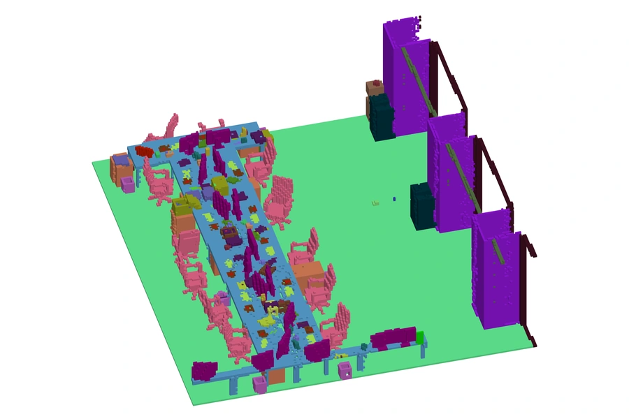
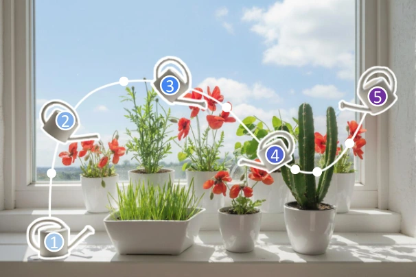
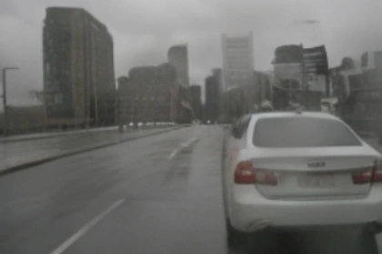
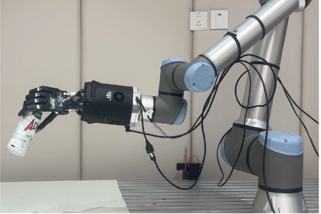
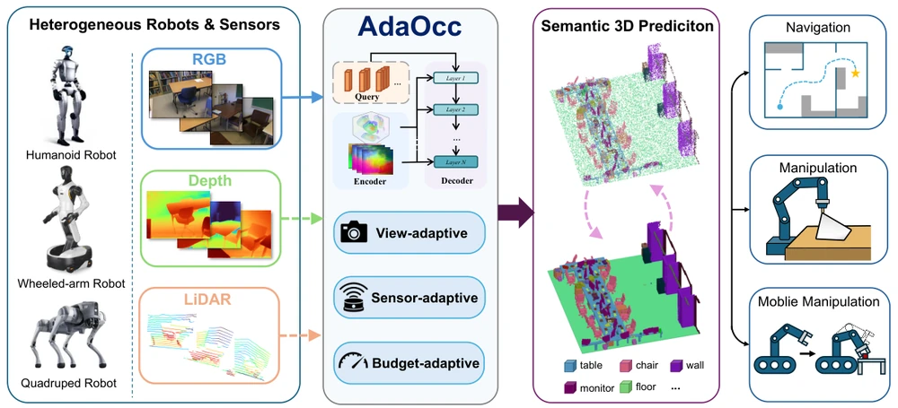
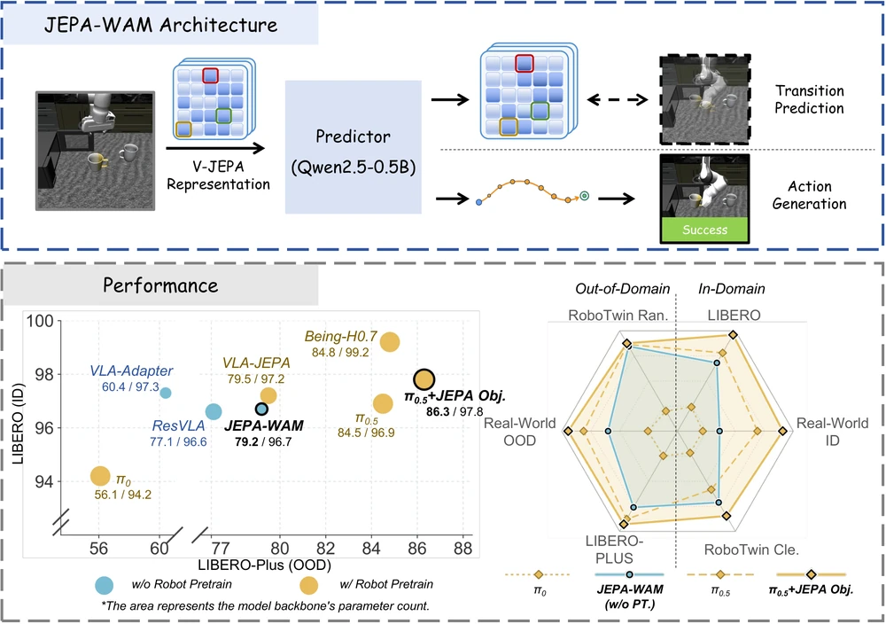
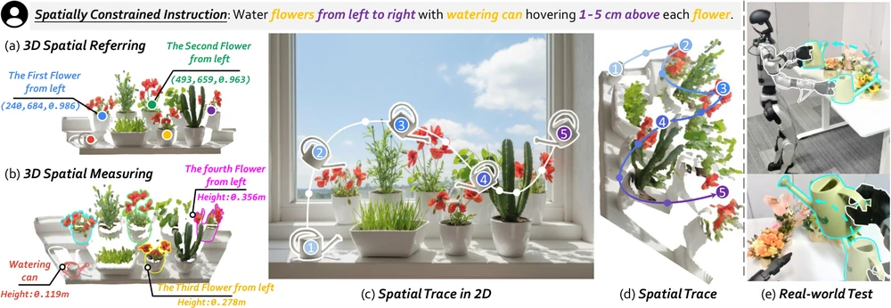
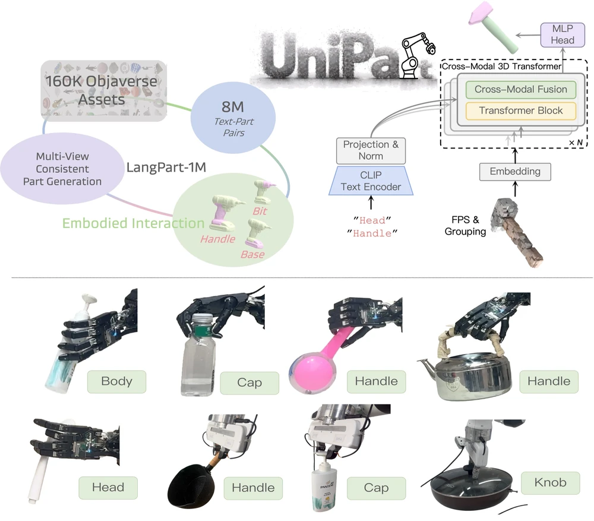
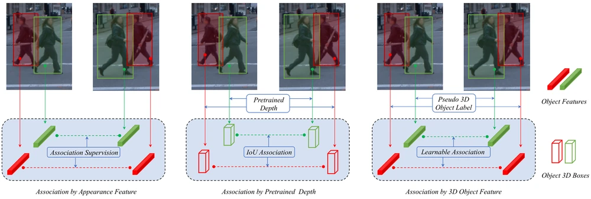
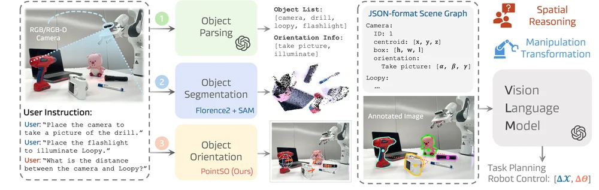

XYZ-ASR
XYZ Embodied AI — Algorithm & System Research
Beijing Academy of Artificial Intelligence (BAAI) · XYZ Embodied AI · Beijing, China
We study algorithms and systems for embodied intelligence, with a focus on spatial intelligence, vision-language-action models, world models, 3D perception, and robot learning.
我们研究具身智能中的算法与系统问题，关注空间智能、视觉语言动作模型、世界模型、三维感知与机器人学习。
Jiawei He / Google Scholar / GitHub / Email




About
XYZ-ASR is led by Jiawei He, a researcher and PhD Advisor at BAAI and a co-founder of XYZ Embodied AI. The group connects academic research with validation on real robotic systems.
团队面向具身智能的核心科学问题开展研究，并重视方法在真实机器人系统中的验证。
Research Interests
- Spatial Intelligence and 3D Perception — spatial reasoning, 3D understanding, detection, tracking, and reconstruction.
- Vision-Language-Action Models — language-grounded manipulation, dexterous grasping, and generalizable robot policies.
- World Models — predictive representations for embodied agents and autonomous systems.
- Embodied AI Systems — data, evaluation, efficient learning, and real-world deployment.
Selected Publications
Google Scholar2026
-

DA-Nav: Direction-Aware City-Scale Vision-Language Navigation.
Ye Yuan*, Kehan Chen*, Xinqiang Yu*, Wentao Xu, Heng Wang, et al., Jiawei He†, Zhulin An†.
IEEE Robotics and Automation Letters (RA-L), 2026.
-

AdaOcc: Adaptive 3D Occupancy Prediction for Embodied Tasks.
Jinglong Wang*, Yunjie Wang*, Zhiyang Zhang*, Jiawei He†, Ye Yuan, Bo Qiu†, Jing Zhang†.
NeurIPS 2026.
-

-

Towards Spatial Trace with Reasoning in Vision-Language Models for Robotics.
Enshen Zhou*, Yibo Li*, Jingkun An*, Jiayuan Zhang*, Shanyu Rong, Mengzhen Liu, Yi Han, Yuheng Ji, Huajie Tan, Jiawei He, Pengwei Wang, Zhongyuan Wang, Cheng Chi, Lu Sheng, Shanghang Zhang.
ECCV 2026.
-

-

-

OmniSpatial: Towards Comprehensive Spatial Reasoning Benchmark for Vision Language Models.
Mengdi Jia*, Zekun Qi*, Shaochen Zhang, Wenyao Zhang, Xinqiang Yu, Jiawei He, He Wang, Li Yi.
ICLR 2026.
-

2025
-

-

-

-

End-to-End Driving with Online Trajectory Evaluation via BEV World Model.
Yingyan Li, Yuqi Wang, Yang Liu, Jiawei He, Lue Fan, Zhaoxiang Zhang.
ICCV 2025.
2024 and earlier


* Equal contribution. † Corresponding author. The full and current publication list is available on Google Scholar.
News
- DA-Nav was accepted to IEEE Robotics and Automation Letters (RA-L).
- AdaOcc was accepted to NeurIPS 2026.
- JEPA-WAM was released on arXiv.
- UniPart and RoboTracer were accepted to ECCV 2026.
- P3DTrack was accepted by IJCV.
- OmniSpatial was accepted to ICLR 2026.
- XYZ Embodied AI was founded in Beijing.
Contact
All PhD positions for the 2027 intake have been filled.
We welcome applications from research interns, researchers, and engineers interested in embodied AI, VLM/VLA, world models, and 3D perception.
Email: jwhe2024@gmail.com
Beijing Academy of Artificial Intelligence / XYZ Embodied AI, Beijing, China